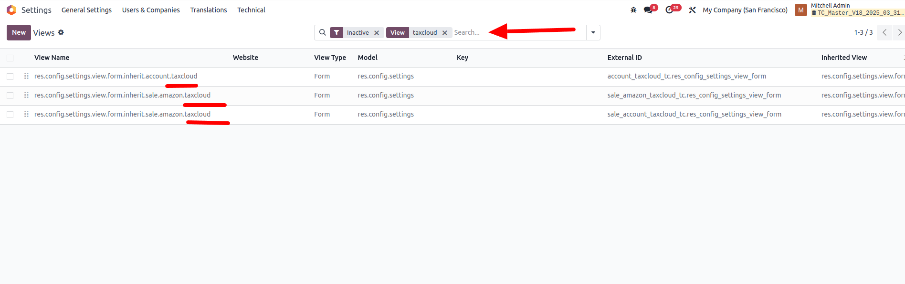
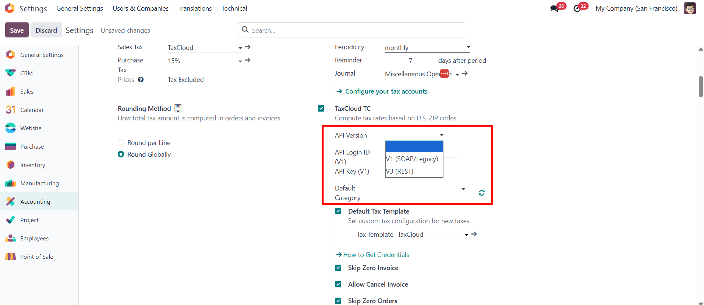
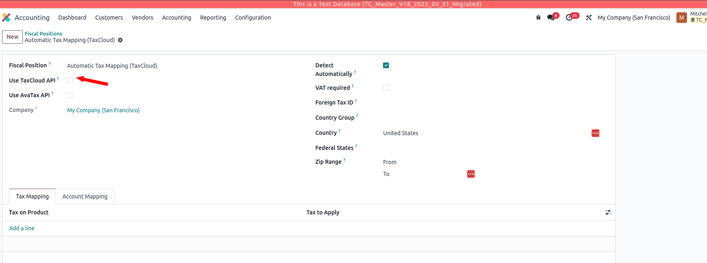
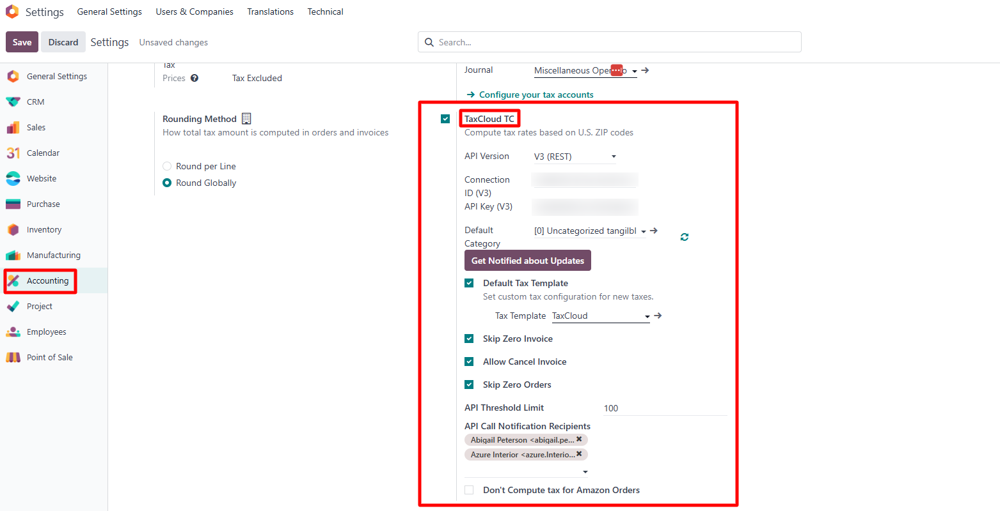
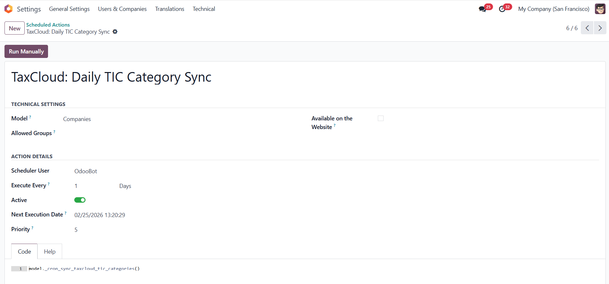
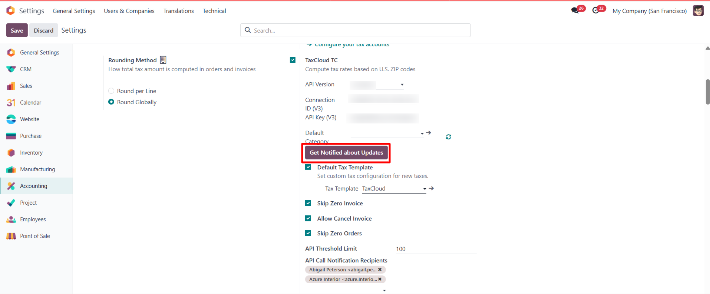
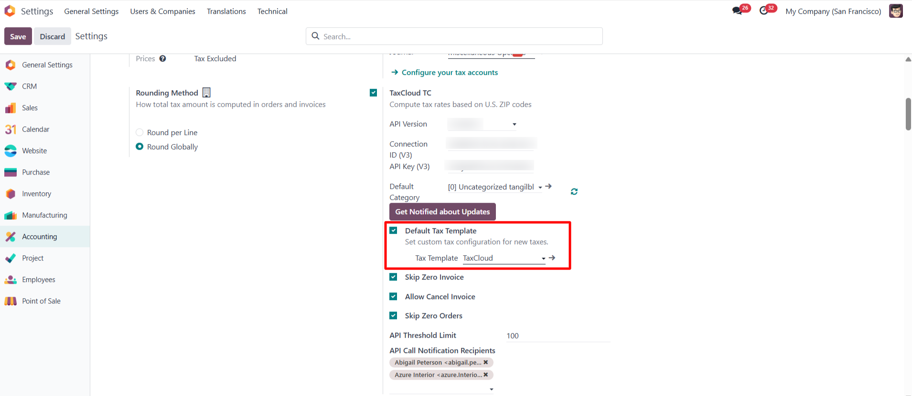
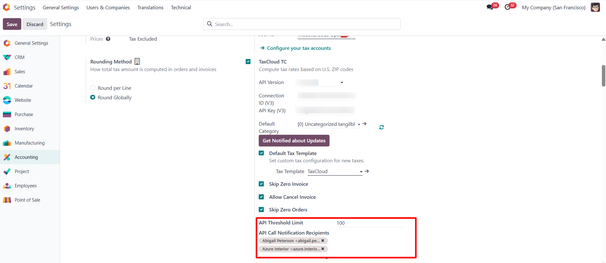
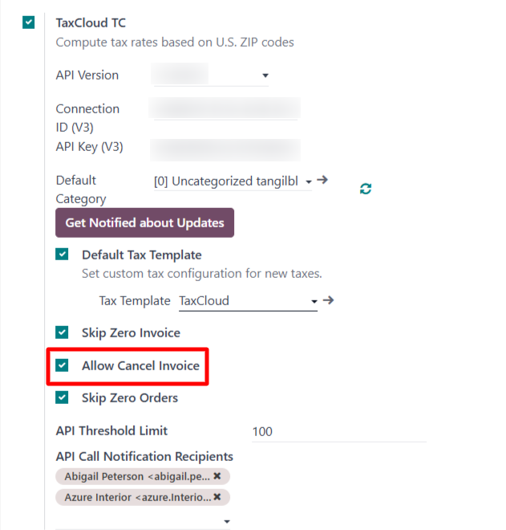
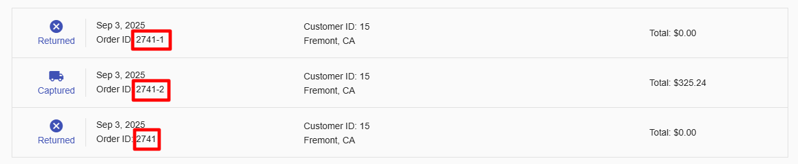

Account TaxCloud
Description
This module connects Odoo with TaxCloud, enabling the automatic computation
of sales tax on invoices within the Odoo platform. It is
compatible with multi-company environments.
This module is replacing the module that was previously supported by Odoo. See
this
link for an explanation.
Odoo released the code to TaxCloud, and Sodexis is maintaining it. Bug fixing
and new features will only be added to this module going forward. If users are already
using the Odoo module and want to benefit from those bug fixes and new features, they can
transition to this module; see the instructions below. They must make sure to test this transition before doing it in production.
If they are not currently using the Odoo connector, they can install this
module as any other module.
For previous versions of Odoo (<V17), they should migrate to V17 before
transitioning to this new module. If they need any help with the migration, they can contact
Sodexis at info@sodexis.com, and a
full team of business analysts and developers will be available to help them.
If they have any questions about sales taxes, they can feel free to reach
out to the TaxCloud team here. If they're interested in learning how TaxCloud can automate their Odoo
sales tax collection, they can find more information at https://taxcloud.com/integrations/odoo/
.
About TaxCloud
TaxCloud (https://taxcloud.com/) is a sales tax compliance solution with over 15 years of experience in tax
technology. Trusted by more than 4,000 companies, TaxCloud streamlines the management of sales
taxes from collection and calculation to filing. It supports e-commerce businesses in navigating
complex U.S. tax regulations across all 50 states and over 13,000 jurisdictions. With TaxCloud,
businesses can accurately calculate taxes, reduce the hassle of keeping up with changing tax
laws, and ensure effortless compliance. Say goodbye to the stress and frustration of sales tax
with TaxCloud.
Module Installation
- Users must download all the official TaxCloud
modules listed below from the Odoo Apps Store before proceeding with the installation process, even if they don’t
use the related Odoo TaxCloud modules. This ensures they get all the TaxCloud features
and proper data transmission. If they use “Deploy
on Odoo.sh” in the Apps Store, they must deploy all the
modules listed below.
- For example, suppose users have not installed
the Subscription app but have installed the Sales app. In that case, they are still
recommended to download all the official TaxCloud modules before installing the
“Account TaxCloud” module. The “Account TaxCloud
- Sale” modules are installed based on the
installed modules list. In the future, installing the Subscription app will
automatically install the needed “TaxCloud and
Subscription” module. This ensures they do not
miss any of the TaxCloud features.
- Users did not use the Odoo TaxCloud
Modules:
- If users are not currently using the Odoo module, they
can install this module by simply clicking the “Activate” button and
following the configuration steps below.
- Using Odoo TaxCloud Modules:
- Switching from the Odoo TaxCloud module to our
connector in odoo V17
- If users are currently using the Odoo TaxCloud
module, then they should not uninstall the current module before installing this module; otherwise, they
will lose all of their data. This module will take care of the configuration & data
transmission from the existing module and automatic uninstallation of the Odoo TaxCloud module once installed. It is not
necessary to reinstall the Odoo TaxCloud module.
- Migrating from Odoo 17 to Odoo 18 or from
Earlier Versions to Odoo 18
- Migrating from Odoo 17 to Odoo 18
- First, switch to the official connector in Odoo 17 to
prevent data loss. Then, proceed with the migration to Odoo 18 using our
connector.
- Migrating from earlier versions to Odoo
18
- First, migrate to Odoo V17 using our official connector.
Then migrate to Odoo 18 to ensure all data is retained.
- Alternatively, the module can be installed directly in
Odoo 18 as a fresh installation and configured from scratch.
- TaxCloud Migration _tc modules (V17 to
V18):
- Please download the V18 version of the TaxCloud apps and use
them.
- In V18, activate the inactive TaxCloud views.
- Enable Developer Mode
- In the "Technical" section (which
appears only in developer mode), find and click on "User Interface" ->
"Views.
- In the search bar at the top of the
"Views" list, type "taxcloud," and in the filter, apply for the
inactive.
- Activate those views.

- In Accounting/Settings, set the TaxCloud API
credentials and the Default Category.

Enable the “Use TaxCloud API” boolean in the Fiscal
position, same as in V17.

For any technical queries or support, contact us at 📧taxcloud@sodexis.com or visit the website at 🌐sodexis.com/taxcloud. Free support for the installation to the first few customers will be
provided.
Configuration
Navigate to the Accounting app and under the Configuration menu, select the Settings
option. In the Settings view, locate the TaxCloud
TC boolean and enable it.
Enter the API (Application Programming Interface) credentials derived from the
TaxCloud site into the fields under the TaxCloud TC section. These steps are required to integrate Odoo with TaxCloud.
The credentials include the API Version, API Login ID, API Key, and Default Category.
- The refresh button under the Default Category is
used to import the TIC (Taxability Information Codes) product categories from
TaxCloud.
- The Default
Category is applied when no TaxCloud Category is set on
both the products and product categories.
- When the boolean “Skip Zero Invoice” is enabled,
the invoice line with a “0” price is not sent to TaxCloud. Because, even if
it is sent to TaxCloud, the computing tax is going to be zero.
- When the boolean “Allow
Cancel Invoice” is enabled, users will be able to cancel
invoices.
- When the boolean “Skip
Zero Orders” is enabled, the sale order line with “0”
price is not sent to Taxcloud. Because, even if it is sent to TaxCloud the computing tax is going to be
zero.
- A new field, “API
Version,” has been added. Users can select either V1 or V3 from the dropdown and enter the corresponding API credentials based on the selected
version.
- A scheduled action named “TaxCloud: Daily TIC Category Sync” has been
introduced. This scheduled job updates the TIC (Taxability Information Code)
categories available in TaxCloud on a daily basis. The synchronization runs
automatically and processes the TIC codes alphabetically from A to
Z, ensuring that the categories remain up to date in Odoo.


To be Notified About Updates
The button “Get Notified about
Updates” allows users to be notified about major updates
and bug fixes.

Clicking the button opens the Compose Email wizard. From the wizard, users
can compose and send a confirmation email to receive notifications from the team regarding major
updates and bug fixes.

The “Default Tax Template”
boolean is found under the Default Category field. When the “Default Tax Template” boolean is
enabled, a new field, “Tax Template,” appears.

Once the Default Tax is set, any tax created through the API will use this
template to generate new taxes. However, fields such as Tax
Name, Amount, and Label on Invoices are left to override.
API Usage Monitoring & Alerts
The “API Threshold Limit” and “API Call Notification
Recipients” fields are used to set the threshold and specify the
recipients for alerts.
When the scheduled action “TaxCloud API
Call Counter” is triggered, it reviews the records from the past 24
hours and calculates the API call count. If the count exceeds the defined threshold, an alert will be sent
to the recipients specified in the “API Call Notification
Recipients” field.


Discover more about keeping your business compliant with
sales tax regulations.
- Explore TaxCloud Taxability Information Codes
(TICs) for detailed product tax classifications: https://app.taxcloud.com/tic
- Access TaxCloud's comprehensive resources,
including a tax rate threshold map, tax rate lookup tool, and state-specific sales tax
guides: State
Guides
Rounding Method
Navigate to the Accounting app and select Settings under the Configuration menu.
In the Settings view, locate the Taxes section and under the Taxes, set the Rounding Method to Round Globally to round the tax values.

Setting TaxCloud Categories on Products
To view the list of TaxCloud Categories, ensure that the developer mode is activated. Navigate to the Accounting app and under the
Configuration menu locate Management to select TaxCloud Categories.

If a TaxCloud Category is set on a product and another on its Product
Category, Odoo only considers the TaxCloud Category found on the product itself.
If the TaxCloud Category is not set on a product, then Odoo considers the
TaxCloud category set on its Product Category.
If the TaxCloud Category is not set on both the product and the Product
Category, then Odoo considers the Default Category set in the Accounting Settings.
The TaxCloud Category set on a parent product category does not apply to its
child product categories and vice versa. For example, if the TaxCloud Category is set to the
“All” Product Category, then it is
not applied to the “All/Sales” Product Category, and vice versa.
Set the TaxCloud category for the Shipping Products and Down Payment Products
to get the right tax computation.


In the Accounting app, navigate to the Configuration menu to locate the Accounting
section and select the Fiscal Positions option. Ensure the 'Use TaxCloud
API' boolean is enabled.
To automatically set the Fiscal Position, enable the 'Detect Automatically' boolean in the
Fiscal Position. When 'Detect Automatically' is enabled, the options such as VAT required, Country Group, Federal States, and Zip Range can be configured based on the requirements.
Here, set the “Country” field as "United
States". If the delivery address in the sales order/invoice is
the United States, then the Fiscal Position (Automatic Tax Mapping (TaxCloud)) will be applied
automatically.

Functionality
Navigate to the Accounting app and select Invoices nested under the Customers
menu
. Create a new
Invoice.
Under the Other Info tab, set “Automatic Tax Mapping
(TaxCloud)” in the Fiscal
position field. The taxes are computed based on the “Fiscal Position” which was configured
initially.

Confirm the invoice to get it posted. It can be seen that the computed tax
from TaxCloud is applied in the invoice, as shown below.
Note: The taxes cannot be computed before the
invoice is posted.

TaxCloud uses the destination from the "Delivery
Address" and the customer from the "Customer ID" on the invoice.

Log in to the TaxCloud website, locate the Transactions menu, and select the Reports
option, which shows the recent transactions in Odoo.
The status of the invoice on the TaxCloud website is seen as “Captured” when the invoice is
posted in Odoo.
Canceling the Invoice
A new invoice cancellation process has been implemented based on the
boolean “Allow Cancel Invoice” in Accounting settings.

When enabled, the standard "Reset to
Draft" button will be hidden for invoices with fiscal
positions linked to TaxCloud. Instead, a new "Cancel"
button is introduced. Clicking this button triggers a cancellation request
via TaxCloud's Return API.

If the API call fails, a pop-up will notify the user of the failure and
suggest manually creating a credit note. If successful, the invoice will be reset to draft and
the TaxCloud transaction will be cancelled simultaneously.

When reconfirming the invoice, a new TaxCloud transaction is created with a
suffix pattern (e.g., 2741-1, 2741-2) appended to the original transaction ID.

If the invoice is cancelled again, the system ensures that the transaction ID
is managed correctly by incrementing the suffix.

Additionally, when a credit note is created from an invoice with a
transaction ID like 2741-2, the same ID will be used to create the corresponding Return on
TaxCloud.

Note: This integration only supports
cancellation of invoices, not credit notes, since TaxCloud does not allow changes to a
transaction once a Return has been processed. Also, if the tax for that period has already been filed, the process remains
valid as long as a proper return date is provided and the return is correctly submitted,
ensuring accurate reporting in TaxCloud.
Credit Note
To reverse the invoice, create a credit note using the “Credit Note” button on the
invoice. When a credit note is created for the posted invoice,
TaxCloud updates the tax and the total as “0”
on the original record with the status as “Returned” as shown below.


Note: This release resolves an issue where
users could incorrectly create credit notes under the TaxCloud fiscal position without
referencing an existing invoice. These credit notes were not reported to TaxCloud, leading to
inaccuracies.
Going forward, credit notes with the TaxCloud fiscal position can only be
created as reversals of existing invoices, ensuring that all credit notes are accurately tracked
and reported to TaxCloud.
If a user attempts to post a credit note not linked to an original invoice,
the system will now throw an invalid operation error as shown in the screenshot below.

Frequently Asked Questions:
Which version is the app available for, and where can I find it?
- The app is available for versions V17 and V18. You
can find it in the Odoo App Store.
Is there a specific installation procedure for integrating TaxCloud
with Odoo 17 and V18?
- The steps are detailed and explained in the Account
TaxCloud Documentation under the Module Installation section.
What Odoo edition is the TaxCloud module compatible with?
- Customers who are self-hosted or hosted
on Odoo.sh can install the modules.
- However, it is not compatible with Odoo Online (SaaS) — because
Odoo Online does not allow the installation of
third-party modules, including the TaxCloud connector
- Customers on Odoo Online hosting who are
currently on a “minor” version, such as v18.1, would need to downgrade to a
stable version like v18.0 and then switch to Odoo.sh hosting before they can install the
Sodexis TaxCloud connector (or any other third-party module).
What can I do if I need support and assistance with installing and using
the module?
- For help with the TaxCloud module, you can purchase an
onboarding package directly from TaxCloud, which includes support from their team.
Alternatively, you can purchase a Sodexis Success Pack through this link, which provides
additional resources and personalized assistance from our team for installation, setup,
and ongoing functionality.
What is the standard timeline to go live with the TaxCloud connector after
onboarding begins?
- Once we receive all the required information,
including your TaxCloud credentials and answers to the initial onboarding questionnaire,
our team typically completes the setup and testing within 5
business days. This includes:
- Install our TaxCloud Connectors in the
Staging
- Configuration to Integrate TaxCloud with
Staging
- Testing the flow and transaction in TaxCloud
- Assistance with moving the configuration to
production
- Once you approve the go-live after completing
the above testing in your staging environment, we can move to production within
3 business days.
Does it support Multi-Website and Multi-Company?
- Yes, the module supports Multi-Website and
Multi-Company configurations. API credentials in the settings are company-specific, and
each website uses the credentials based on the company on it.
Why does the tax rate percentage sometimes appear
incorrect?
- Regarding the tax rate rounding issues, please note
that the tax amount is correct and matches what's calculated by TaxCloud. However,
the tax rate % displayed may not be accurate due to rounding, which can cause
confusion.
- If this is a concern, we recommend not
displaying the tax rate percentage to the customer and instead showing only the total
tax amount.
- We are aligned on a long-term solution to
address this issue when we port the integration to TaxCloud APIv3 in the future.
Can I cancel an invoice after it’s sent to TaxCloud?
- Yes, you can cancel the invoice after it’s
sent to TaxCloud. If you want to allow invoice cancellation, enable the boolean
“Allow Cancel Invoice” option in the Accounting Settings. To enable this feature, make
sure you have installed the latest version of the account_taxcloud_tc module.
- This allows canceling invoices only; credit notes
are not supported for cancellation with this option.
Why am I getting an error when posting an invoice created from a sales order
after making a return?
This error occurs because TaxCloud now blocks the creation of credit notes using the
TaxCloud fiscal position unless they are generated
directly from an existing invoice. When a return is processed, attempting to create a new standalone invoice
or credit note (instead of referencing the original invoice) triggers this restriction.
Why aren’t taxes updating in Odoo after changing the TIC in
TaxCloud?
- Taxes in Odoo are calculated at the time a sales order is
created, using the TIC (Taxability Information Code) that was active in TaxCloud at that moment.
- If the TIC is later updated in TaxCloud, the change will not
apply to existing sales orders because Odoo does not recalculate past transactions automatically.
- To correct taxes when the wrong TIC was initially set, you can
either:
- Click Update Taxes on the existing sales order to recompute
taxes using the new TIC, or
- Cancel and recreate the sales order so taxes are calculated
with the corrected TIC.
I process Standalone Credit Notes, will that work with
TaxCloud?
- Standalone credit notes in Odoo are not yet integrated
with TaxCloud. If this is something you need, please contact us—we’d be
happy to explore building a custom connector tailored to your
requirements.
On which address is the calculation of tax based?
- It is based on the Delivery Address with the correct
Zip code, state, and country.
How do I manage the taxability of shipping charges?
- You need to set up the TaxCloud category on the
shipping product.
Will an invoice line or sales order line with a zero amount be sent to
TaxCloud?
- Yes, it is sent to TaxCloud. If you don’t want
to send those, enable the boolean “Skip Zero Invoices” or “Skip Zero
Orders” option in the Accounting Settings.
Does TaxCloud compute tax for Amazon orders?
- Yes. However, if you don’t want to compute tax
for sales orders created from Amazon, enable the “Don’t Compute Tax for
Amazon Orders” option in Accounting Settings.
Can I use TaxCloud with my POS?
- Currently, TaxCloud is not integrated with Odoo POS.
We're collaborating with TaxCloud to enable this functionality. For the latest
updates, feel free to reach out to us.>
How do you set up accounts for the taxes created via API?
- A default Tax can be set in the “Default Tax
Template” field on the Settings. Once configured, any
tax created through the API will use this template. However, fields such as Tax Name, Amount, and
Label on Invoices are left to
override.
Why does the “Update Taxes” button not show up in the sales
order?
- If all the apps are installed properly, check whether
the “Use TaxCloud API” boolean is enabled in the fiscal position set on the
Sales Order.
How do I set the Fiscal Position automatically?
- Enable the “Detect Automatically” boolean
in the Fiscal Position.
Is there a way to avoid every quote reaching out to TaxCloud for tax
calculation?
- Yes. This can be controlled using the Fiscal Position
configuration in Odoo, specifically the “Detect Automatically” option. If the TaxCloud
fiscal position is only applied to specific states/countries, TaxCloud will only be triggered for those
customers.
How do we handle out-of-the-country customers?
- For international customers, you can either configure a
separate Non-Taxable or rely on default tax
rules. Since TaxCloud fiscal position can be limited to US states only, international customers will not
trigger TaxCloud and can remain non-taxable.
Can we configure a customer for tax exemption during the sales order
creation process in the TaxCloud Odoo?
- No, tax exemption cannot be configured directly in the
sales order. A separate Exemption menu is available in both the Sales and Accounting
modules, where you can manage customer tax exemptions.
If I set an exemption for the parent contact, will it apply to child
contacts?
- Yes, when an exemption is set for the parent contact,
it automatically applies to all its child contacts whose delivery state matches the
exemption state.
- However, if an exemption is set for a child contact,
it applies only to that contact and does not extend to its parent or child
contacts.
Why does the create button for Exemption not show up?
- Ensure the “Manage TaxCloud Exemption”
user group is enabled for the relevant users.
Will TaxCloud still compute tax for the Exemption applied invoice/order
line?
- Yes, for some specific TIC codes.
Is the TaxCloud system and connector
capable of handling partial sales tax calculations?
- Yes, using the exemption module, a valid
exemption certificate that includes a specific exemption reason will ensure the correct
tax rate is applied.
Why is the tax not computed for all states?
- To enable tax collection for states, please make sure
those states are enabled to collect the taxes in the TaxCloud account.
Do I need to configure the threshold manually?
- The threshold is available in the TaxCloud account;
there is no configuration for it in Odoo. The threshold will be set
automatically.
Does the creation of a sales order also generate a transition in the TaxCloud account, or can we
limit it to only those related to the actual invoice?
- Yes, this transaction is necessary to maintain
consistent tax between the invoice and SO.
Why do some of the transactions in TaxCloud show no cart ID? How can we
check which order this transaction was created in?
- This was resolved. Please make sure you are using the
latest version of the app.
How does the transition status get updated?
- The status will be updated as “lookup”
for the quotation, “captured” for the invoice, and returned for a credit
note. For the confirmed invoice, the transaction is authorized and then captured, so we
don’t see the transaction in the authorized state.
What are the current limitations of the TaxCloud-Odoo
Connector?
- Inability to cancel an Invoice or
Credit Note after it has been submitted to TaxCloud.
- Compatibility issues with the Point of
Sale (POS) system.
- An "Update Tax" feature on
Invoices/Credit Notes to verify the tax amount prior to submission to TaxCloud.
- Odoo sometimes applies discounts using
negative line items, which the TaxCloud API does not support at this time.
- The TaxCloud API provides the total amount
rather than the tax rate, requiring Odoo to generate the tax rate, which may lead to
rounding discrepancies.
I previously used a different tax calculation software, and now I
need to process a refund/return for an order that wasn’t handled through TaxCloud. I'm
getting errors—did I do something wrong?
- No. TaxCloud now restricts the creation of
credit notes with the TaxCloud fiscal position to only those generated from existing invoices. This ensures that
all records using the TaxCloud fiscal position are properly reported to TaxCloud.
- We're also rolling out a new
release that addresses a bug that previously allowed users to create standalone credit
notes with the TaxCloud fiscal position. However, those credit notes weren’t being
transmitted to TaxCloud, since TaxCloud only accepts credit notes as reversals of
existing, reported invoices.
- To get this update, please download and
install the latest version of the TaxCloud connector.
What do I do if I have more questions?
What do I do if the instructions included in these FAQs do not
work?
- Check to make sure you're using the most recent
version of the TaxCloud connector. If necessary, update the module and try
again.
Document Version: 3.0
Credits
Contributors
For additional information or inquiries regarding TaxCloud, feel free to
reach out to us at
Sodexis <📧taxcloud@sodexis.com>
or visit our website at <🌐sodexis.com/taxcloud>
This module is maintained by Sodexis.